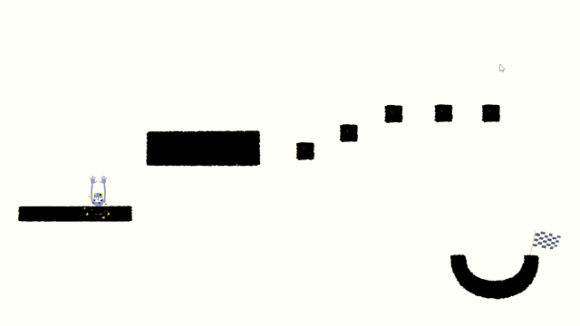
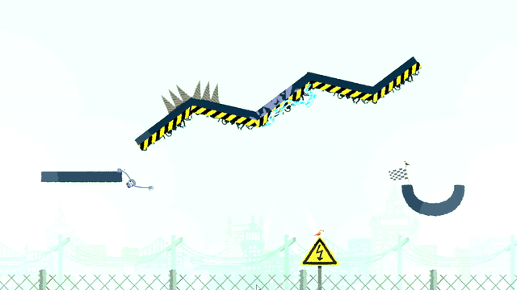

What is Heave Ho?
Heave Ho is a game of wacky characters swinging around obstacles to get to the finish. I would suggest that you play in multiplayer mode, but all footage on this page will be singleplayer, as I had no one else to film with.
Each person controls a character. The challenge is to get your character (whether your friends help, or the opposite) to the finish point. Once one player has made it to the finish, they can pull a small lever on the underside of the platform, that will provide the other players with a floating raft that will help them fly to the finish. Below is an example of what Heave Ho looks like.

As you progress through the game, the levels get harder, and longer. There are plenty sets of levels, each one with a different theme. The first theme (as seen in the above gif) is plain black and white, to introduce you to the game. Each theme adds a new aspect to the game (eg: the magician's levels add teleporting; the electric levels add electric wiring.) An example of an electric level can be seen below. (If you touch live wire, you will have to reset the level.)

This game is the simplest game I play, and it is great to play if you just want to relax, or have some fun. This game is ten times better when you have a friend or friends in the same room to play with. This game is intended to be streamed to a large screen (I use the television) and played with people sitting around, (on a couch) with controllers, to play the game. Note: This game can be played on a keyboard, but the controls are harder to use, and it is strongly advised that you use a controller to play.
How can I get better at Heave Ho?
To get better at this game, I would suggest to work together with your friends, as in the later levels it becomes near impossible to do on your own. This can be done by flinging other players to the far side of the screen to get ahead faster, or creating bridges by grabbing eachothers arms for someone to climb over. This game is intended to be for fun, and there isn't really a right way to play it, so I would also suggest to just play the game for fun.